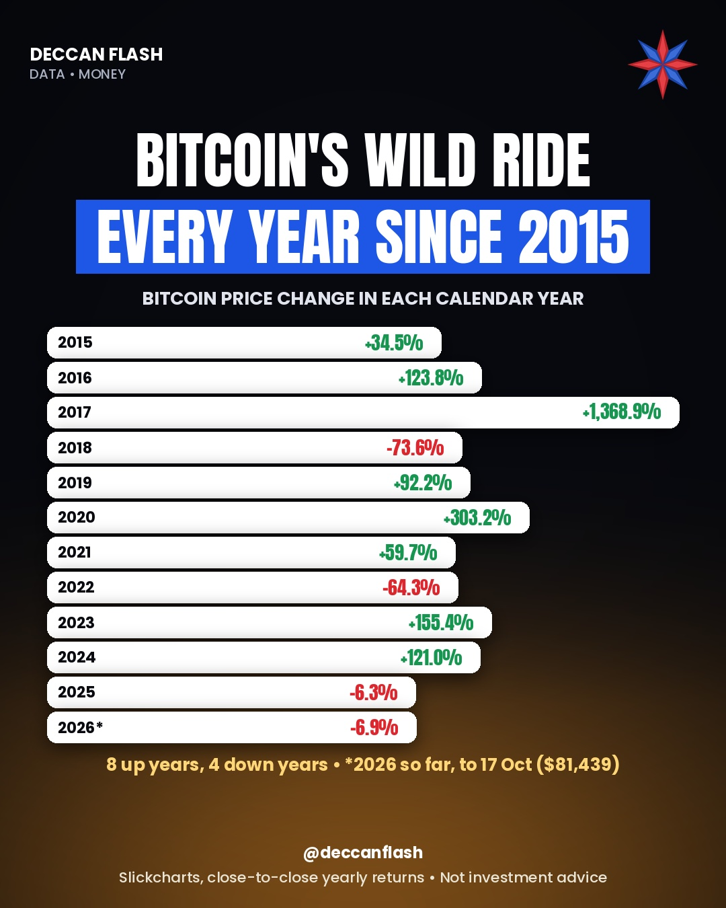

Money · World
Bitcoin's wild ride, every year since 2015
Bitcoin went up in 8 of the 11 years from 2015 to 2025, but the falls were brutal: −73.6% in 2018 and −64.3% in 2022. Each crash came straight after a huge year. Put together, $100 at the start of 2015 would have grown to about $27,300 by the end of 2025, roughly 273 times.
Bitcoin price change in each calendar year
Close of one year to close of the next, in US dollars. 2017's huge rise makes the other years look small.
Year by year
| Year | Return | Up or down |
|---|---|---|
| 2015 | +34.5% | Up |
| 2016 | +123.8% | Up |
| 2017 | +1,368.9% | Up |
| 2018 | −73.6% | Down |
| 2019 | +92.2% | Up |
| 2020 | +303.2% | Up |
| 2021 | +59.7% | Up |
| 2022 | −64.3% | Down |
| 2023 | +155.4% | Up |
| 2024 | +121.1% | Up |
| 2025 | −6.3% | Down |
Returns are close-to-close for each calendar year (Slickcharts). StatMuse's figures differ by at most 0.2 points because it uses slightly different closing prices. Our Instagram post also shows 2026 so far; 2026 isn't over, so it isn't in this table. Not investment advice: past returns do not guarantee future returns.

Quick answers
What was bitcoin's best year?
2017, when the price rose 1,368.9%. 2020 was next at +303.2%.
What was bitcoin's worst year?
2018, when it fell 73.6%. In 2022 it fell 64.3%.
Did bitcoin go up in 2025?
No. Bitcoin fell 6.3% in 2025, its first down year since 2022.
How often does bitcoin have a down year?
3 times in the 11 years from 2015 to 2025: 2018, 2022 and 2025.